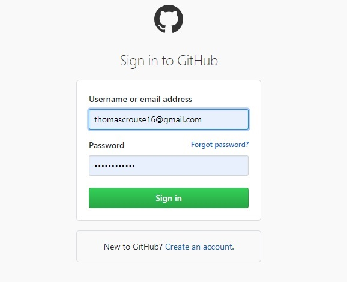
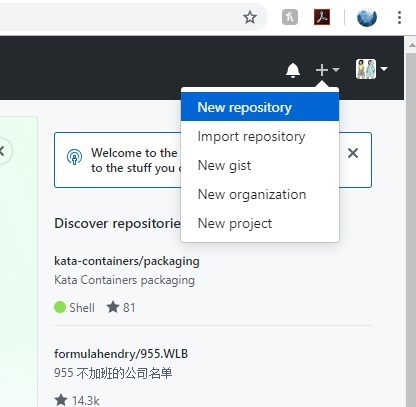
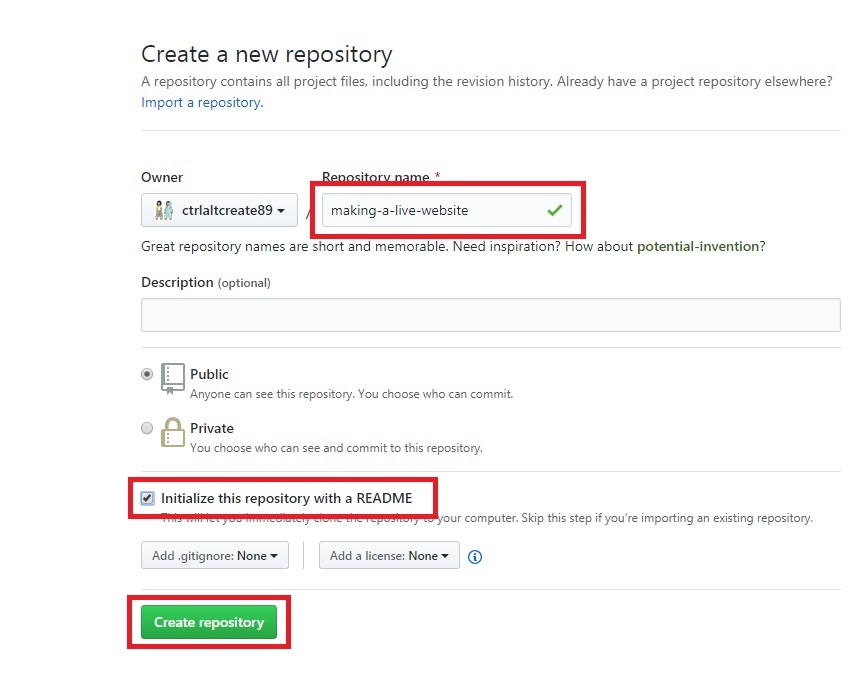
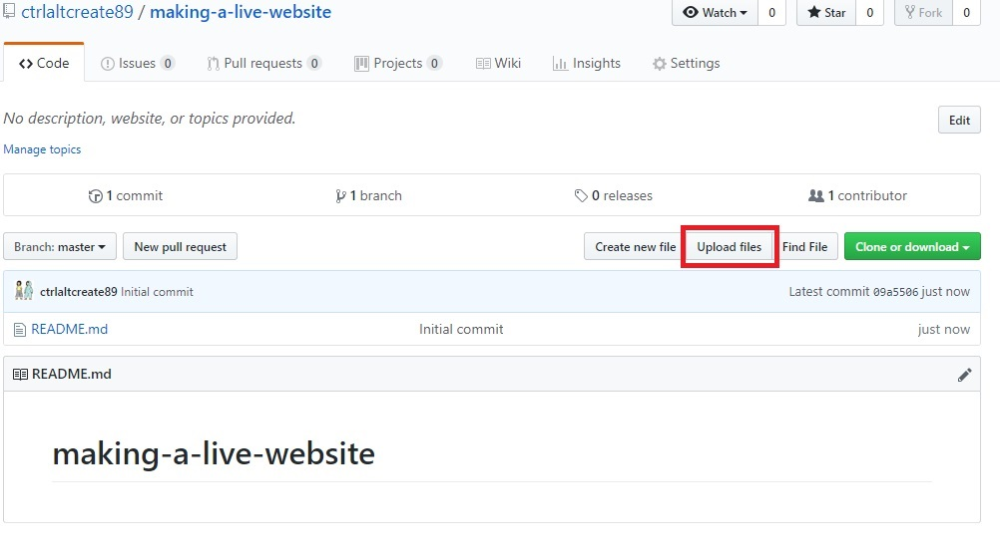
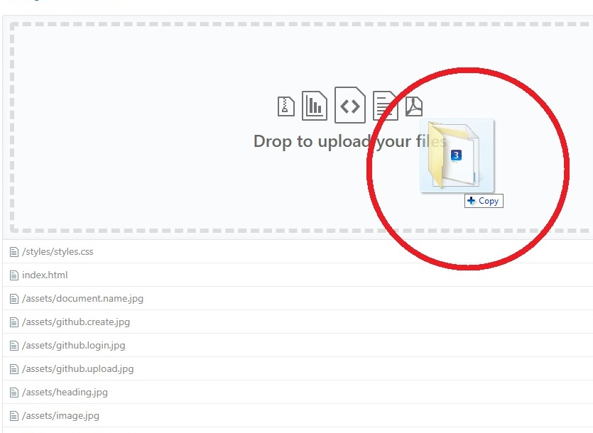
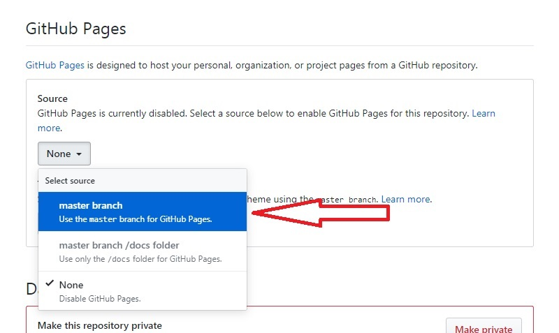
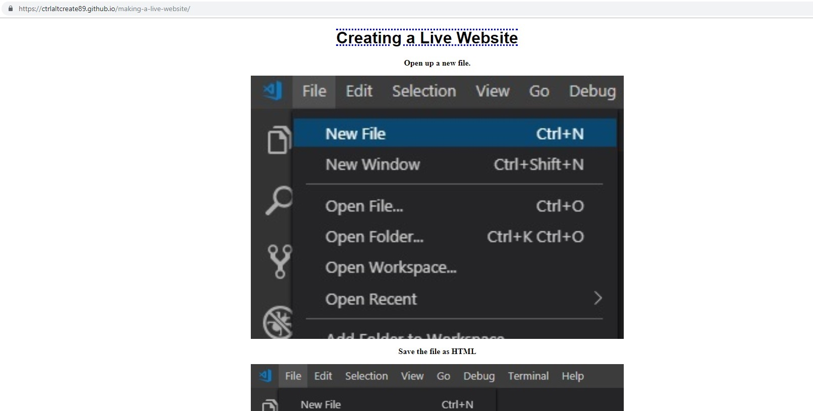

Publishing to GitHub
Go to GitHub.com
First thing you'll do is go to GitHub and sign in!
 (If you don't have an account make sure you make one!)Now you will go in and make a "New Repository"
Edit your Repository settings.
Here you will name your respository. After doing that you will mark "initialize this repository with a README". After that you will click "create repository".
Upload your Files.
You will then be brought to a page where you can edit and delete files in your repository. Here you'll click on "Upload Files" and drag in your main html document as well as your assets and styles folders.
Then you can click "upload files"

Publish your website.
Now that you have uploaded your documents you will go to your settings and scroll down to "GitHub Pages". You will then click under Source and choose the option "master branch".
Doing this will refresh the page and give you the link to your website

Clicking on that link will bring you to your website!
